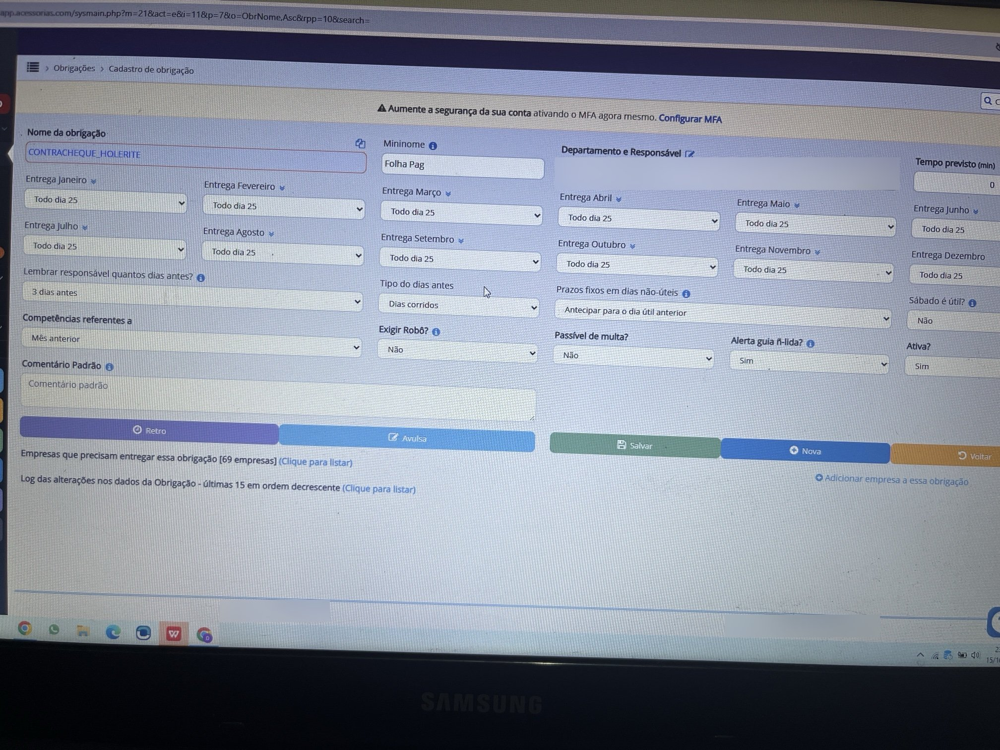
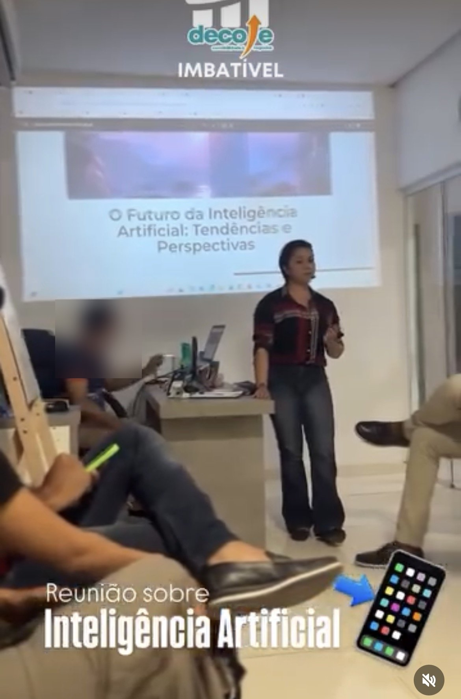

Controle de prazos, obrigações e certidões em escritório contábil, do cadastro no sistema até a entrega no prazo técnico.
Meu foco é qualidade na rotina contábil: configurar o controle, conferir antes de entregar, acompanhar cada responsável e agir antes que um atraso vire multa ou uma pendência impeça a emissão de uma certidão.
Certidões, pendências e mensagens da caixa postal do e-CAC, para regularizar antes de a pendência impedir a emissão de uma certidão. Acompanhei a migração do Monitor Contábil para o Veri.
Com acesso completo, configurei permissões de usuários e o envio de lembretes em massa para os clientes mandarem documentos no prazo.
Mapeei e padronizei processos, conferi os dados antes de liberar o uso e corrigi cadastros duplicados e cobranças mal configuradas antes que gerassem boletos ou relatórios incorretos.
Apresentei à equipe do escritório contábil o tema “O Futuro da Inteligência Artificial: Tendências e Perspectivas”, mostrando como a IA pode apoiar a rotina do escritório.
Referência de carga tributária entre Simples Nacional e Lucro Presumido por faixa de faturamento, lucro líquido do setor, desafios comuns e boas práticas, para apresentar o valor da contabilidade ao empresário.
Cada obrigação tem uma meta interna antes da data da lei. Entregar no prazo técnico deixa margem para conferir e corrigir um erro antes que ele vire multa ou retrabalho.


Suporte a clientes e equipe, configuração e acompanhamento de obrigações no Acessórias, monitoramento fiscal e administração do Onvio.
Acompanhamento de indicadores e da qualidade do atendimento da equipe, feedback e padronização de procedimentos.
Mapeamento de processos, parametrização, conferência de dados e treinamento de usuários.
andrezaadmti@gmail.com(99) 99191-1932